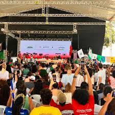
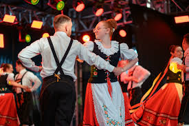

Festival de Diversão e Cultura Local
O Verão Capanema reúne a comunidade para três dias de esporte, música e tradições regionais, promovendo
integração e lazer familiar em Capanema.

O Verão Capanema reúne a comunidade para três dias de esporte, música e tradições regionais, promovendo
integração e lazer familiar em Capanema.

Inclui danças gaúchas, polonesas e alemãs de grupos locais, além de exposições e culinária típica, fortalecendo a identidade cultural do sudoeste paranaense.

Show de abertura com grupos de Capanema, Planalto e São José do Cedro apresentando coreografias gaúchas e polonesas.
Gratuito; Duração: 1h; Local: Parque de Exposições.
Apresentações musicais ao vivo misturadas com competições esportivas e atividades radicais.
Artistas locais; Acesso livre; Food trucks disponíveis.